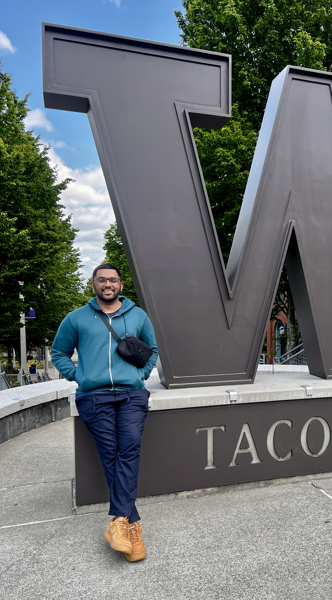

I approach data the way an engineer approaches a system: take it apart, understand how it works, and rebuild it into something people can act on.

Hi, I am Ashwin. I am a Business Intelligence and Data Analyst with a background in telecommunications engineering and a Master of Science in Business Analytics from the University of Washington.
My engineering background taught me to break down complex systems and understand how things operate. I approach data analysis the exact same way. My focus is entirely on finding the ground truth and translating a complicated web of information into clear, actionable business strategy.
At the end of every data point is a human behavior.
My perspective is heavily shaped by the places I have lived. I grew up in Dubai and later spent time in Sydney, where I briefly worked as a gelato maker (shoutout to Rivareno). Experiencing such vibrant, international hubs gave me a deep appreciation for different cultures, global perspectives, and the way people connect. This inherent curiosity about people makes me a better analyst.
An end-to-end growth analytics case study on a simulated B2B SaaS company. It covers the full path a real growth team works through: funnel and retention analysis, A/B testing, causal inference, churn modeling, and customer lifetime estimation. Because the data is synthetic, the true answer behind every number is known, so the project shows whether standard methods actually recover the truth or get fooled by it.
A rebuild of a ridership and revenue forecasting problem from a real Pierce Transit consulting engagement, recreated end to end on synthetic data so it can be shared publicly. I built the data pipeline, trained SARIMAX time-series models to forecast boardings, revenue, and farebox recovery, and deployed an interactive Streamlit application for exploring fare-change scenarios.
An end-to-end relational database project transforming raw e-commerce records into a structured cloud data warehouse. I designed the schema in Azure SQL and performed deep exploratory analysis using Python and pandas. The project focuses on deriving strategic BI metrics, including RFM customer segmentation, cohort retention modeling, and customer lifetime value calculations.
An interactive Tableau tool that matches renters to Seattle neighborhoods. A three-step wizard scores every neighborhood against a person's budget, commute time, walkability, transit access, and social vibe, then ranks the best matches with plain-language explanations for each one. The pipeline combines Census demographic data, OpenStreetMap street networks, and GTFS transit feeds into a single weighted scoring model.
These days, I call the PNW home. When I am away from my desk, I am usually exploring Seattle's local cafes, hunting for the best fish and chips to compare against Sydney's, or watching Arsenal test my emotional resilience.